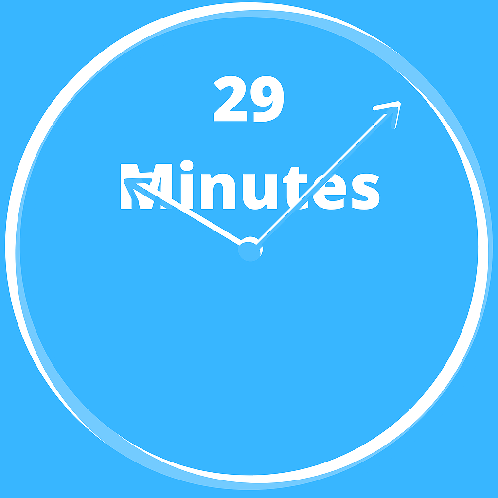
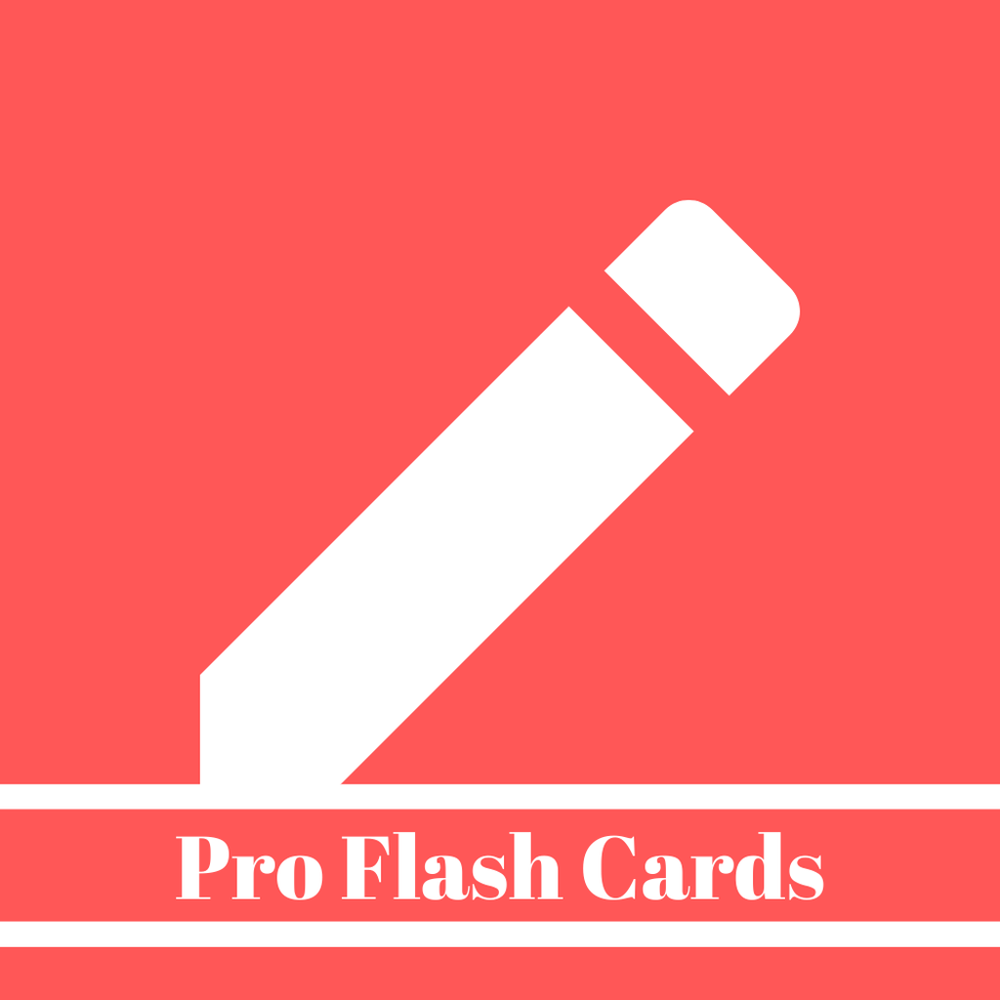
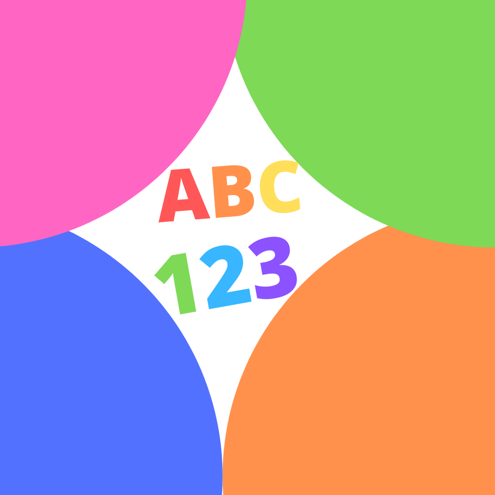

Count-Downer
Count down the days with Count-Downer!
Count-Downer is an easy-to-use and personal app for counting down the days to that next special event. Don't ever miss the next birthday, anniversary, or Holiday ever again with daily reminders for any dates you choose.
DoserR-X
DoseR-X is an easy way to track medications
An easy and beautiful Dose Tracker to help you remember your medications. Whether they are prescribed or not. Kids sick and need Tylenol? The app can remind you when to give a new dose as well as show you a log of doses taken.
Your Pro Flash Cards
Your Pro Flash Cards. The best way to study for any topic!
Easily create as many decks as you could ever need.
Adding cards is a cinch as well, and each deck can have an unlimited amount of cards.
Quickly test your knowledge of a topic in a fast and efficient manner that you can take with you anywhere.
No more packs notecards and rubber bands to drop and lose.
No more need to sort and shuffle your decks before you study.
Your Pro Flash Cards does it all for you!
Letter Practice
Beautiful app to help children learn there letters and numbers
Letter Practice is an app developed for parents to work with their children that are learning their letters and numbers. Letter Practice lets you choose between capital letters, lower-case letters, and numbers currently up to 20. Letter Practice will shuffle through a category with the press of a button while randomly presenting in a new color and playing a different sound with each press.